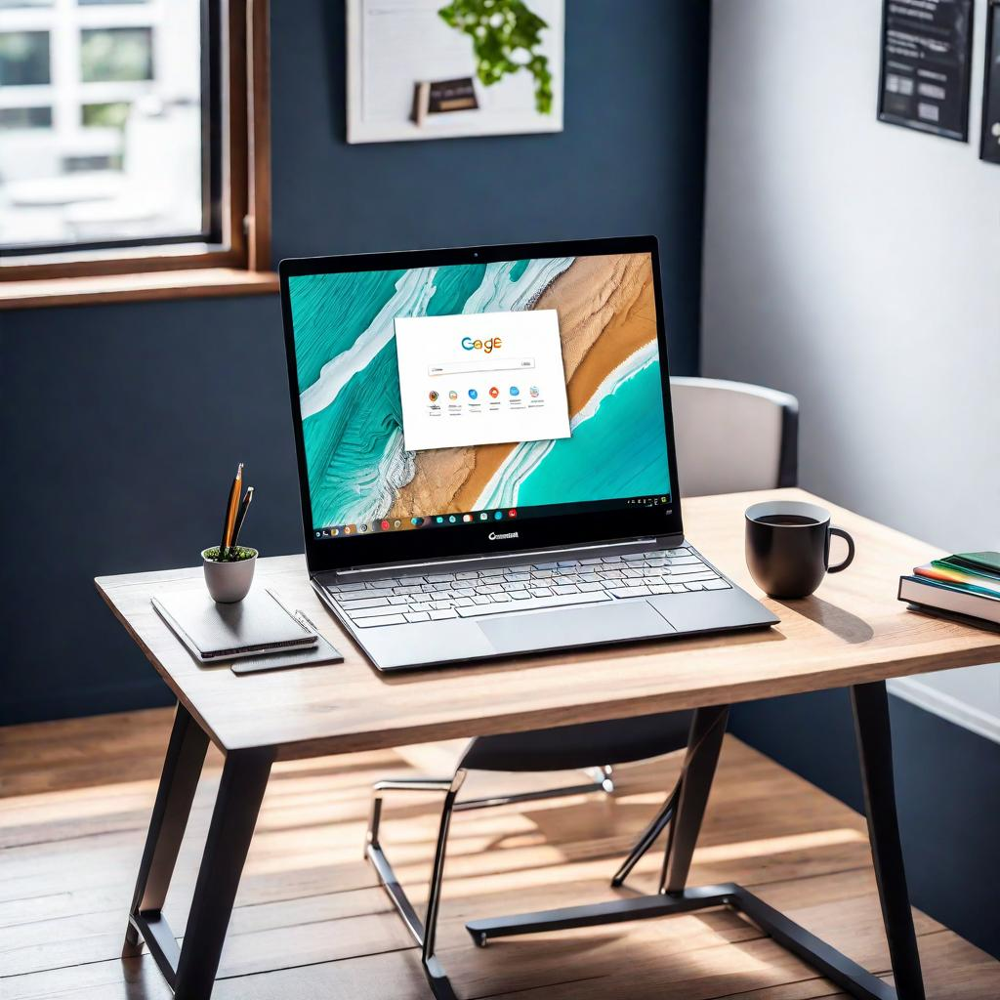
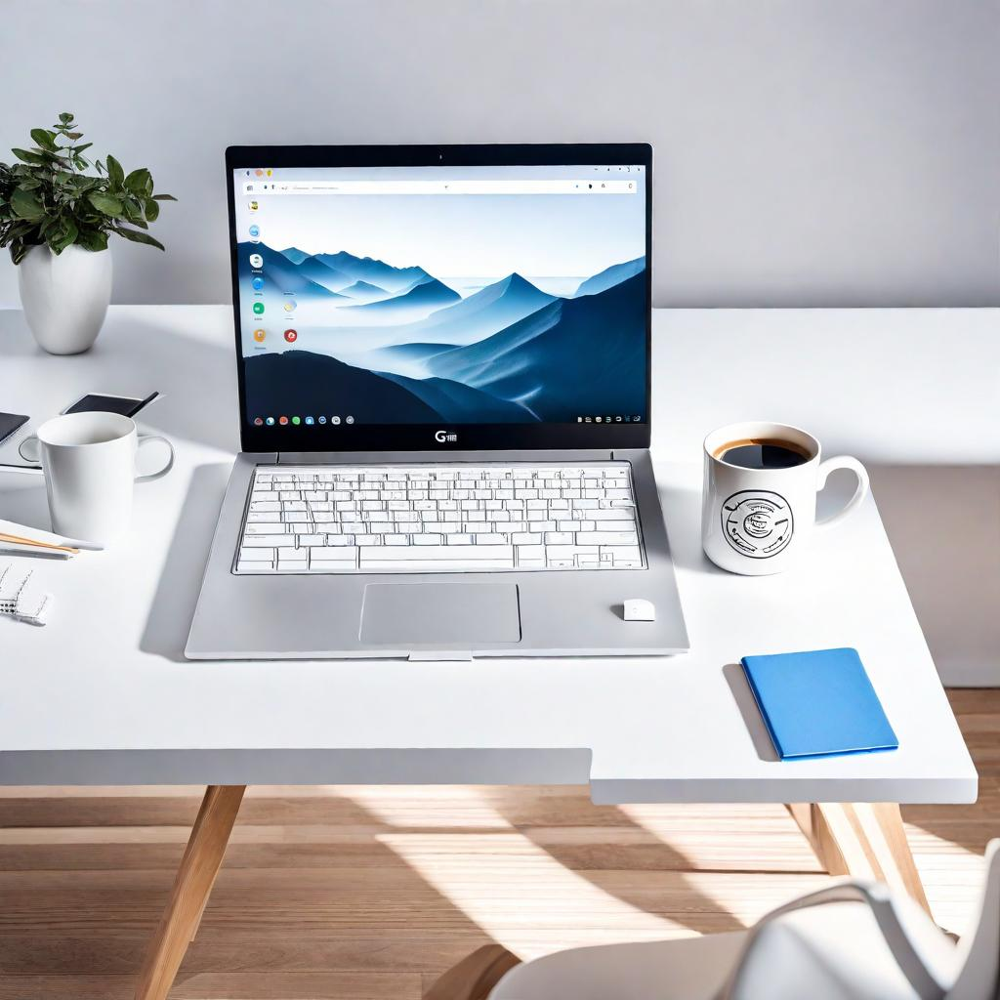

In a world dominated by laptops running various operating systems like Windows and macOS, Chromebooks have emerged as a unique and streamlined alternative. These laptops, designed by Google, operate on a distinct operating system known as Chrome OS. In this post, we'll delve into the intricacies of Chromebooks, uncovering what sets them apart in terms of simplicity, speed, and their reliance on cloud-based computing.
Table of Content
What is a Chromebook?
A Chromebook is a laptop computer that is specifically designed and produced by different companies. It runs on Google's Chrome OS, which is the operating system exclusively used by chrome books. Chromebooks are famous for their lightweight design and their focus on web-based applications and storage. They have fast boot times, receive automatic updates, and offer a user-friendly interface. As a result, they are highly favored in educational environments and by users who mainly use their computers for web browsing and online applications.
What Sets Chromebooks Apart?
1. Chrome OS: A Lightweight Operating System
Chrome OS, the operating system that powers Chromebooks, is a Linux-based platform developed by Google. What distinguishes it from other operating systems is its lightweight nature, emphasizing simplicity and speed. Chrome OS is designed to be highly responsive, ensuring quick boot times and smooth performance.
2. Simplicity in Design and User Interface
Chromebooks are renowned for their user-friendly interface. The design philosophy revolves around simplicity, making these laptops accessible even to users with limited technical expertise. The interface is clean and straightforward, resembling the familiar Google Chrome web browser.
3. Fast Boot Times and Instant Updates
One of the standout features of Chromebooks is their impressive boot times. Users can power on their device and be ready to work or browse the web within seconds. Additionally, Chrome OS is designed to update seamlessly in the background, ensuring users always have the latest security patches and features without any interruptions.
The Chromebook Hardware Landscape
4. Diverse Range of Devices
Chromebooks come in various shapes and sizes, catering to different user preferences and needs. From compact and lightweight models ideal for students to larger, more powerful devices suitable for professional use, the Chromebook market offers a diverse range of options.
5. Affordability Without Compromise
Chromebooks are often more budget-friendly compared to laptops running other operating systems. Despite their lower price point, they don't compromise on performance, making them an attractive option for users seeking an efficient and cost-effective computing solution.
Chrome book Pros and Cons
| Pros | Cons |
| ✅ Simplicity: User-friendly Chrome OS interface. | ⛔ Storage Limitations |
| ✅ Speed: Quick boot times and efficient for basic tasks. | ⛔ Limited Offline Functionality: Some apps require an internet connection. |
| ✅ Security: Automatic updates and sandboxing enhance security. | ⛔ Performance for Intensive Tasks: May struggle with resource-intensive tasks. |
| ✅ Integration with Google Services |
Who Benefits Most from Chromebooks?
Education and Student-Friendly Features
Chromebooks have gained popularity in educational settings due to their affordability, simplicity, and ease of management. With features like automatic updates and a secure, controlled environment, Chromebooks provide an ideal platform for students and educators.
Casual Users and Web-Centric Tasks
For users whose computing needs primarily revolve around web browsing, email, and online applications, Chromebooks are an excellent choice. Their streamlined design and cloud-centric approach make them well-suited for individuals who rely on internet-based services.
What is the Difference Between a Laptop and a Chromebook?
| Chromebook | Normal Laptops | |
| Operating System | Chrome OS | Various (Windows, macOS, Linux) |
| Software | Web-based applications and Android apps | Supports a wide range of applications |
| Storage | Limited, cloud-centric | Varied, includes HDDs and SSDs |
| Performance | Generally lightweight | Varied, from budget to high-end |
Conclusion
Chromebooks offer a distinct perspective on computing, focusing on simplicity, speed, and cloud-based features. With a wide selection of devices and an operating system designed for efficiency, Chromebooks are becoming increasingly popular among different user groups, including students and professionals who are looking for a dependable and cost-effective computing solution. As technology continues to advance, Chromebooks are expected to remain an attractive choice for individuals who value a streamlined and web-centered computing experience.
.jpg)
.jpg)